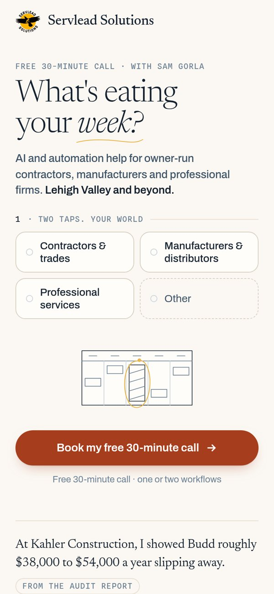
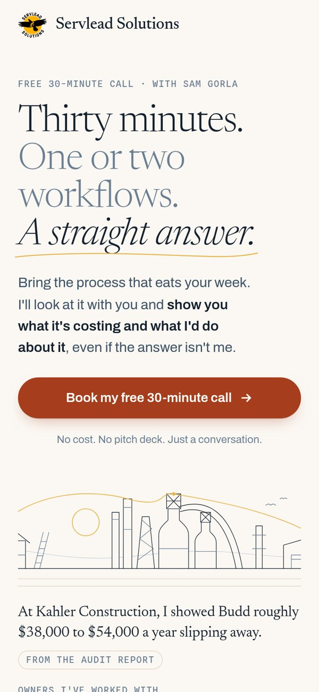
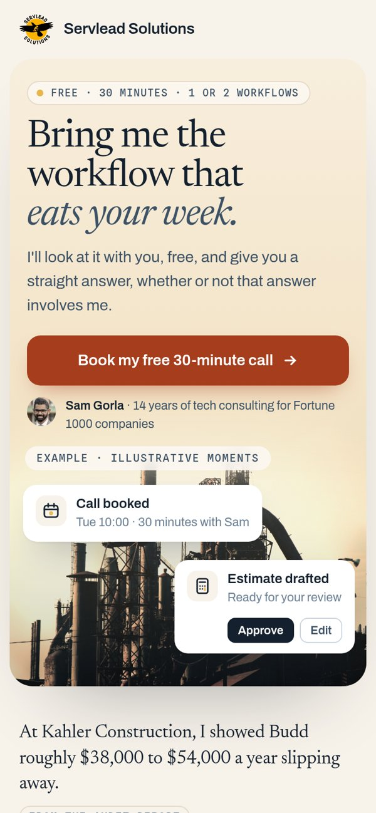

Homepage mockups
Three light, warm directions for servleadsolutions.com. Each is a hero plus the sections below it, built for desktop and phone. Preview only, not the live site.

Recommended
C · Listen first
Two taps: pick an industry and what eats your week, and see what Sam would look at, with a line drawing. Calm sections and plain-answer FAQ below.
Open C →

Alternative
A · Big promise
One big promise, lots of space, and hand-drawn Lehigh Valley line art. Three steps, three equal paths, a note from Sam.
Open A →

Alternative
B · Photo and moments
The Bethlehem blast furnaces at dusk, warm-graded, with example workflow moments popping in. Three equal paths, a note from Sam.
Open B →